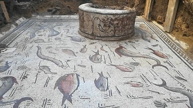
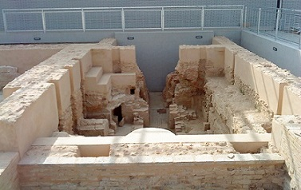
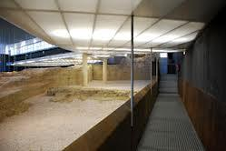
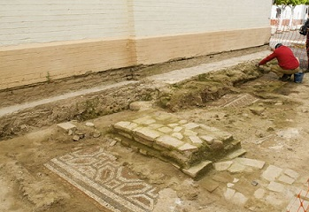

|
SEVILLA ROMANA - Écija - Carmona - Osuna - Tomares, a finales de abril de 2016, se descubrieron 19 ánforas con monedas de bronce que no estuvieron en circulación. Están datadas en el siglo IV. En el anverso, aparece la figura del emperador Maximiano o de Constantino. En el reverso, diversas alegorías romanas, como la abundancia. Las ánforas proceden de un horno de Alcolea del Río. - Marchena. Se han hallado restos desde la Edad del Bronce en el Montemolin, donde se halla una necrópolis con cerámica campaniforme. También han quedado vestigios del periodo, tartésico, turdetano y cartaginés. Los historiadores no se pone de acuerdo con su origen y nombre romanos, para unos es la Castra Gemina citada por Plinio, para otros por la monedas halladas se trata de Cilpe y posteriormente cambiaria al de Colonia Marcia en honor a su fundador Marco Marcelo; pero otros dicen que fue fundada por Lucio Marcio y algunos afirma que su nombre Marcia, es en honor de la hermana de Trajano. - Alcalá de Guadaíra, en el entorno de 'Las Majadillas', han sacado a la superficie un yacimiento que se extiende por cerca de cuatro hectáreas y que alberga los vestigios de lo que habría sido una antigua villa agrícola romana. - Estepa. Bajo la dominación romana, destruida Astapa, se fundó Ostippo. Hay numerosos restos de la época romana en la propia población y en diversas villas del alrededor, una basílica paleocristiana con pila bautismal y una necrópolis con quince tumbas. - En Castilleja del campo se ha descubierto un columbario de época romana. En el municipio también se han encontrado restos de cerámica, tumbas y mosaicos. - En Cantillana, en noviembre de 2017, Aparece un mosaico de la antigua «Naeva» romana. En época romana contaba con un importante puerto fluvial y hay constancia de una asociación de barqueros naevenses. Son numerosos los restos romanos encontrados, estatuas, fustes, inscripciones, o los caños llamados La Fuente, al norte del pueblo. Hay noticias según las cuales el noble romano Lucio Elio Emiliano llenó de estatuas los pórticos que rodeaban el foro de la ciudad, la cual contaba con moneda autóctona en la que figuraba la cabeza de una mujer y un sábalo con atributos de la agricultura. Mayo 2019, nuevas excavaciones confirman el hallazgo de las termas romanas de Cantillana. El mosaico de la Casa de los Delfines, las estructuras aparecidas en las calles aledañas y la excavación bajo el antiguo pósito se ponen en relación como parte de un gran complejo termal de Naeva.
 - En Casariche destaca el poblado celtíbero de Ventippo. Testigo de la guerra civil entre los hijos de Pompeyo y Julio César. Dé época romana se decubierto tres yacimientos: las canteras, la ciudad de Ventippo y la villa tardorromana de El Alcaparral. También destacamos el Museo del Mosaico Romano de Casariche. En julio de 2020 los restos del Cerro Belillo, se vuelven a sacar los restos a la luz. - En Sevilla ciudad, destaca de época romana el Museo Antiquarium. Se ha hallado varias casas con mosaicos de los siglos II, III y V de la Hispalis romana; una casa del siglo VI de la Ispali visigoda y una casa del siglo XIII de la Ishbiliyya almohade. De época romana también es la factoría de salazones del siglo I. - En Herrera se localiza en complejo termal de carácter público, datado en en siglo III. Destaca la riqueza de sus mármoles y sus pinturas parietales; y el mosaico del "Pugilator".
 - En Mairena del Alcor, en junio de 2017, descubren una columna romana de casi dos metros de altura encuadrada en el yacimiento arqueológico bautizado como La Peñuela, asociado a una villa romana cuyo origen se remontaría al siglo I. De época tartésica, destaca el Tesoro de Mairena. - En San Juan de Aznalfarache, se localiza la Villa romana de Osset Iulia Constantia. El material hallado en las excavaciones datan el origen de San Juan a época turdetana, hacia el siglo III a.e.c. También de época romana es la necrópolis en el extremo opuesto de los jardines del Prado de San Sebastián. Se descubrieron más de 200 tumbas en buen estado de conservación.
 - En Utrera, en febrero de 2019, en las obras en El Torbiscal descubren una necrópolis romana con más de treinta enterramientos. La necrópolis está datada en en el siglo I. En el término actual de Utrera hubo varios asentamientos de época romana: Siarum, Salpensa, Alice, Orippo y Leptis. De sus monumentos destaca el puente romano de Las Alcantarillas. La inscripción lo vincula a Roma y pudo levantarse en el siglo I a.e.c. Un puente formaba parte de la Vía Augusta en el tramo que unía Híspalis (Sevilla) con Gades (Cádiz). - En abril de 2022, se hallan varios fragmentos de un mosaico romano del siglo IV o finales del III junto a la iglesia de Tocina. Los hallazgos revelan su pasado como exportadora de aceite de oliva. Los tres fragmentos encontrados forman parte de una única pieza que decoraba el suelo de la estancia principal de una villa romana. Foto: www.diariodesevilla.es
 - En noviembre de 2022, hallan una necrópolis del siglo I en La Puebla de Cazalla. Una excavación ha sacado a la luz elementos como una tumba forrada de plomo con joyas de oro y piedras preciosas en su interior.
|